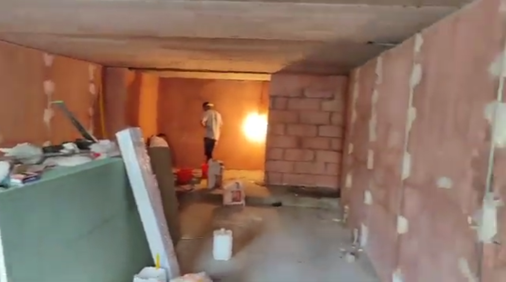

Neonomad
Astana / Founded 2025
The history of the Astana‑based brand neonomad (Instagram) began in the summer of 2025, when a young entrepreneur from Uralsk, Samat Darkeyev, decided to open an offline store in the capital.
The idea to enter the clothing retail market matured after the first test collection showed excellent sales in his hometown of Uralsk, while the Astana market seemed half‑empty in this segment.
Archival video recordings from the spring of 2025 captured the physical starting point of the business: the premises are in the rough‑finish stage, with bare walls, dust, and no renovation work.
At the start, neonomad made a bold bet on sportswear decorated with national symbols.
